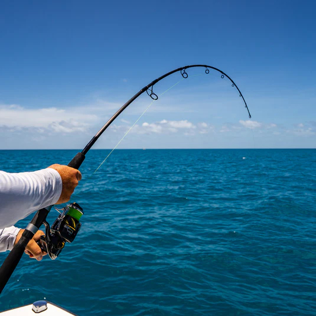
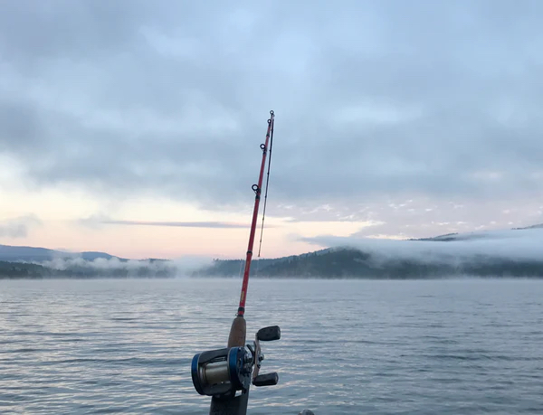
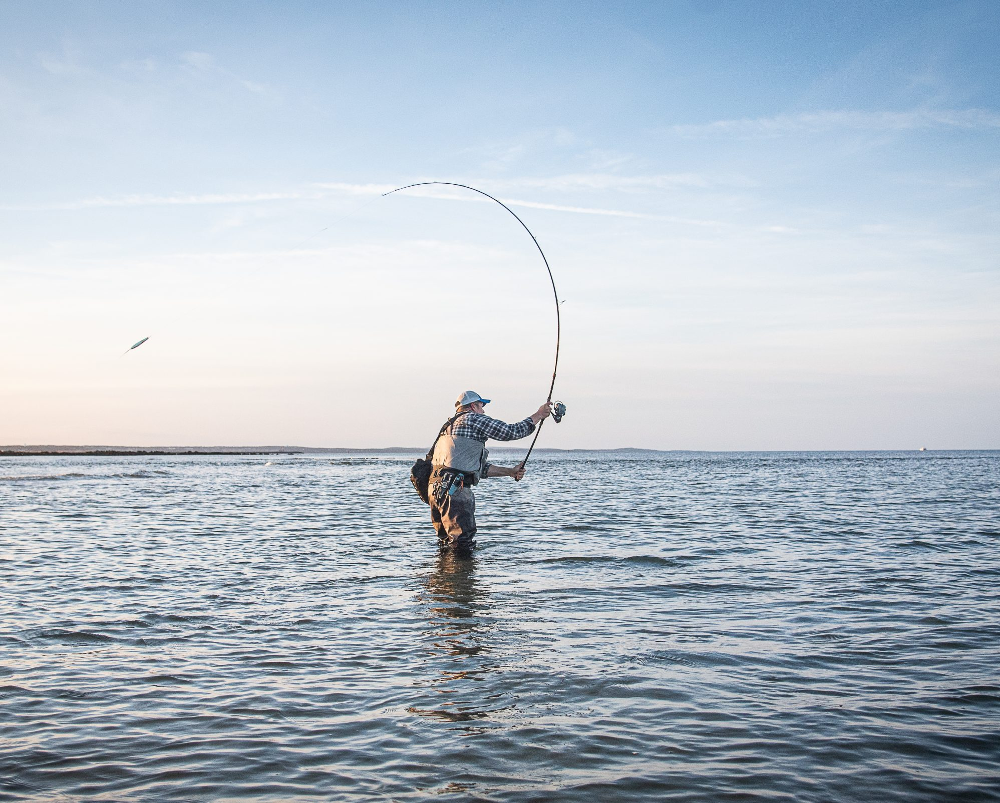
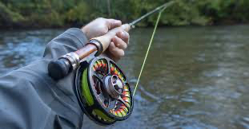

Spinning Rod
A spinning rod is a versatile fishing rod designed with line guides on the bottom and a reel seat meant for a spinning reel, making it ideal for casting light lures and bait. It features large guides, allowing fishing line to move freely and reduce tangles, making it highly suitable for beginners, finesse fishing, and various fishing conditions.

Casting Rod
A casting rod is a type of fishing rod designed to be used with a baitcasting or spincasting reel mounted on top, featuring small line guides and a "trigger" on the handle for increased control and accuracy. They are typically stiffer, more powerful, and ideal for heavy lures, targeting larger fish, or precise, technical casting techniques.

Surf Rod
A surf rod is a long, durable fishing rod, typically 9 to 15 feet in length, engineered for casting heavy lures or bait long distances from the beach beyond breaking waves. Built with strong materials like graphite or composite, they feature medium-to-heavy power to fight large fish and withstand harsh saltwater.

Fly Rod
A fly rod is a specialized, flexible fishing rod used to cast nearly weightless artificial flies by utilizing the weight of a specialized fly line rather than the weight of a lure. They are designed for delicate, accurate, and stealthy presentations of flies to fish in various water conditions, ranging from trout streams to saltwater.